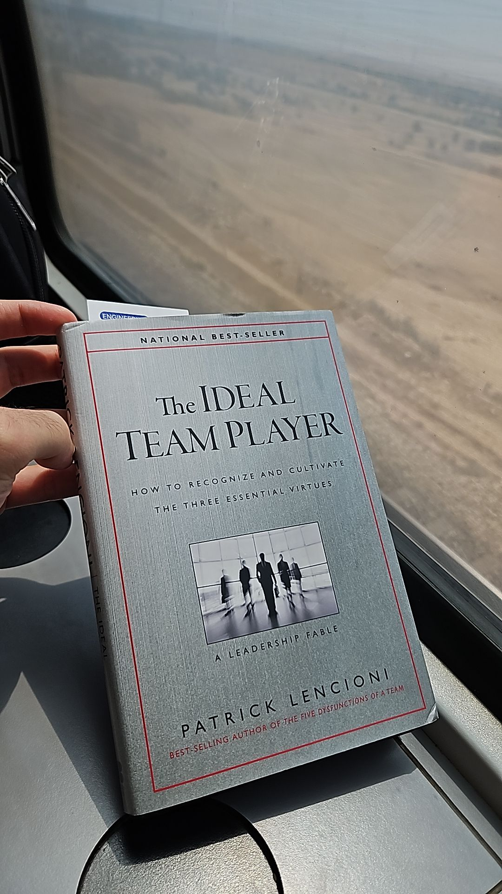

Book report: The Ideal Team Player
Recently I’ve read The Ideal Team Player by Patrick Lencioni following Yoav Alon’s recommendation. I’ve read it on a train: best way to read books. You can’t do anything else, and your fellow passengers think you’re smart. This only works when they don’t watch videos on their phone with the sound on 💢😡.

Overall I liked the book; hard to argue with it, really. And it somewhat tracks with my experiences. But… In my opinion (which I’ll try to mark with ðŸ’) it does have many issues. As I read more and more management and leadership books I’m starting to become more critical of them. This might be a bad thing, as it causes my to miss out on the good advice they have somewhere. Ignorance is bliss 🤷
TL;DR
The book explores the idea that a great team player has three virtues: Humble, Hungry, and Smart. The author argues that a person who has all three virtues is the ideal team player.
The three virtues
Humility
According to the author, this is the most important virtue. Not being self-centered, putting others first, but having confidence. The quote that explains it best is:
“Humility isn’t thinking less of yourself, but thinking of yourself less”.
- C.S. Lewis
💠This being the most important virtue came to a surprise to me, until I watched the author’s TEDx talk:
Patrick explains the reason humility is the most important virtue is because… the bible says so. This is immediately off-putting to me. Really? Jesus said I shouldn’t hire this DevOps team lead since she’s a bit arrogant?
Hunger
People who want to rise above their station. Hungry for personal growth and for team success. They’ll take on more work and responsibilities. They have a strong work ethic. Never do just the minimum.
However this is not to be confused with being a workaholic - where one’s entire identity is tied to their work.
Smart
This is a bit of a misnomer. It doesn’t mean being intelligent, but rather being “people smart”; knowing how to interact with others, being able to read people, and using that skill ethically to work well with others. Smart in the book’s context means smart about people. Not intelligent, but emotionally intelligent and knows how to act.
The book goes on to categorize and sub-categorize people based on these virtues, with the perfect team player being someone who is humble, hungry, and smart. The book gives concrete guidelines on how to apply these virtues in your team - hiring, assessment, development, and culture.
Where’s the proof?
The books argues many thinks about ideal team players. Well, argues is a strong word, that makes it sounds like this is based on research, data, and facts. This is not the case. The book is actually based on the author’s consultation firm’s (called The Table Group) values and how they’ve applied it in other companies they’ve worked with. The consulting firm consults on management and leadership, so it’s not surprising that they have a book that says “this is how you should do things”… Bad business to present their pricey services as “here’s a generally positive story about our specific experience which may or may not apply to you”.
💠I didn’t like this about the book. The main pillar of most of management books isn’t scientific; the author’s experience in the companies and organizations they worked at as they were working there are the basis for the conclusions reached and the lessons learned. That’s totally great! Learning from other people’s experience is a great way to learn. However, this book sort of leans more into this framework being great, but without any real data or science to back it up.
Compared to
Turn the Ship Around!
If you haven’t read Turn the Ship Around, I highly recommend it; and as you can check out in the link above, I think it have great generalizable principles and advice that were relevant to me at the time (and still are). HOWEVER, the book isn’t a fable - it is told based on David Marquet’s experience as a submarine captain. It is upfront about the fact that it is based on experience and relies on that to make the points it needs, and to teach the lessons in a relatable way to the reader.
The Goal
The Goal does a similar thing to The Ideal Team Player, in that it is a fable that tells a story to teach a lesson. However, The Goal is based on the Theory of Constraints, which is a scientific -ish theory. It draws from previous work. It has provable changes. It was (and is) being peer-reviewed. E.g.:
This brief survey has indicated that TOC [Theory of Constraints] has been capable of improvement in many industries such as product mix, accounting, banking, etc. The idea of TOC is based on detecting a critical bottleneck and attempting to remove the bottleneck in an attempt to upgrade the system to a new level. The present survey has indicated that TOC has had good potential to help managers improve productivity of different organizations. Table 2 shows different implementation of TOC.
A far cry from “here are good values for an Ideal Team Player that are somewhat based on my experience, but you should take them as gospel”.
I want to be fair here - in “The Ideal Team Player”, the author does say “don’t just take this and implement it” in the end of the book. But… the book is written in a way that makes it sound like this is the best way to do things.
The story
The book has two parts; the first part is a story about someone’s who’s stepping in for a family member as the CEO of a construction company. The company has two big projects on the horizon and has issues with the team; people aren’t working as a team and the company needs to hire new people both in the exec level and in the field to make the projects work.
The story isn’t super significant - basically showing how to teach other people in your organization about the values, and how to implement them. Obviously, the implementation is successful, and the company is saved.
Hiring & promoting
One of the main things the books dives into is the hiring process. In the story, the exec team is looking for another exec to join them to offload some work. They start by sourcing candidates from the outside, and they find someone who’s retired but has tons of experience. Going through the hiring process they find out that the person is hungry and smart, but not humble: relying on their hunches. They decide not to hire him, instead promoting someone from within.
💠Relying on multiple people’s hunches in the hiring process is a great idea. I actually like the process the book goes through; do part of the interview in and informal setting and double down on the values the team is worried about in that specific candidate.
Employee Development
In the book, the CEO has a one-on-one with Nancy; a project manager who’s been abrasive, excluded from meetings, does it “whether she knows or not”. The CEO gives her feedback on her behavior. Nancy is surprised, but takes the feedback to heart and starts working on it.
💠This is a great example of how to give feedback. The CEO was direct, stayed on topic, and gave specific examples, but also was empathetic and gave Nancy positive feedback from her colleagues. I like it :)
Trusted Advisors
Anyone remembers these guys?
In the story, the CEO has a team of two in the exec team; his HR person and his COO. The book says, and I agree ðŸ’, that having trusted advisors is important. If you’re going on the court, you need people to play with.
What about performance?
The book claims people who are humble, hungry, and smart are great team players. It glosses over performance, hand-waving it away: the author says, basically, that culture and teamwork trump that.
This totally doesn’t track with my experience. People who have these virtues have them anywhere, since these aren’t really team- or vertical-specific. But if you can’t do your job, other people will have to pick up the slack. And that’s not productive, unfair, and definitely makes for a bad team player.
I’d even say that if someone isn’t significantly better at performing some parts of their job better than others in the team, they can’t be a team player at all.
Dollar-store psychology
Also known as פסיכולוגיה בשקל.
Remember the Venn diagram from before? The author categorizes and sub-categories people based on these virtues:
- 0 for 3: disaster
- 1 for 3:
- Pawn
- Bulldozer
- Charmer
- 2 for 3:
- Humble and hungry, but not smart: the accidental mess maker
- Humble and smart, but not hungry: the lovable slacker
- Hungry and smart, but not humble: the skillful politician
- 3 for 3: the ideal team player
Well.. 💠I’m really not a fan of systems that group people, and then tell you how to work with said groups based on the group they’re in. This is classic management 101 trope like Myers-Briggs, DISC, Type A Type B, etc. It’s an appeal to tribalism! “You’re a red, I’m a blue, we can’t work together”.
It’s just a few steps removed from Zodiac signs, really.
Conclusion
What can I take from the book (and maybe you, as well)?
Improve myself
- How can I be more humble?
- “Humility isn’t thinking less of yourself, but thinking of yourself less”
- I need more confidence in myself, since the cause for my arrogant behavior is just that - I’m insecure. Insecure about my skills, my job, my company, my team.
- How can I be more hungry?
- Make sure I keep it sustainable and healthy. I’m not a workaholic… but I have a tendency to work too many hours. And I’m writing this on the weekend; after a full week of work and editing a podcast episode. So… yeah. I need to stay hungry while doing less.
- Make sure I’m hungry for team success, not personal success.
- How can I be more “people smart”?
- Well, it’s hard to teach common sense 😅
- Need to be more direct about my shortcomings there. Need to be a lot less emotional, and play some “collaboration chess”. Try to predict what people are going to say and how they’ll respond.
Improve my team
Currently, I’m leading the EEE (Engineering Enablement and Experience) team at Orca Security. As we’re hiring people now, and going through the process of building the team (we only started in March), I can use the book’s advice on how to hire people. The mid-year performance reviews are coming up, and I can use the book’s advice on how to assess people and give specific teamwwork-related feedback.